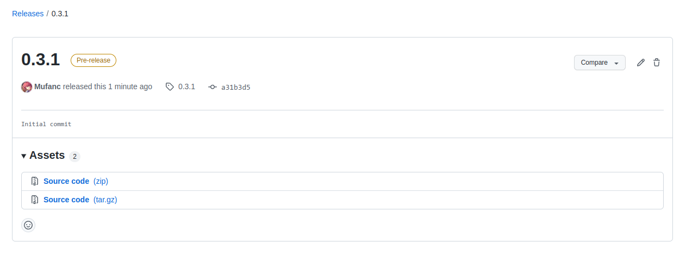
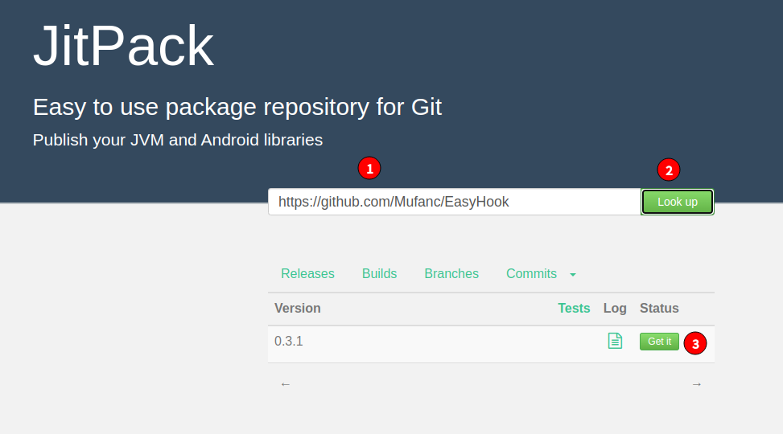

发布自己的 Android Library 到 JitPack
Kotlin 是一门十分简洁的静态类型语言，同时拥有非常优秀的扩展性，与 Java 相比，使用 Kotlin 进行 Android 开发能有效减少代码量。下面以一个常用的 User 类为例，简单展示下 Kotlin 的简洁性：
1 | public class User { |
1 | data class User(val id: Int, val name: String) { |
在 Xposed 模块开发中，如果能够利用 Kotlin 的简洁性，自然能够极大地加快开发速度，让我们把工作中心放到整理逻辑上来，而不是与各种反射斗智斗勇。有人同样也注意到了这个问题，并制定了一套解决方案，比如 KyuubiRan 的 EzXHelper，然而用起来总感觉不太顺手，遂决定自己开发一套 Xposed Hook 增强 API
首先创建一个空项目（No Activity），然后新建 Module，注意选择类型为 Android Library，将我们的库代码写在这里，然后在模块的 build.gradle 中添加/合并：
1 | plugins { |
将代码发布到 GitHub，在 Release 页发布一个新的版本，标签为当前版本号：

现在前往 jitpack.io，将你的仓库地址粘贴到输入框，然后点击右侧的 Look up 按钮：

在下方选择刚刚发布的版本，点击 Get it 即可开始编译
参考
本博客所有文章除特别声明外，均采用 CC BY-NC-SA 4.0 许可协议。转载请注明文章出处！

评论